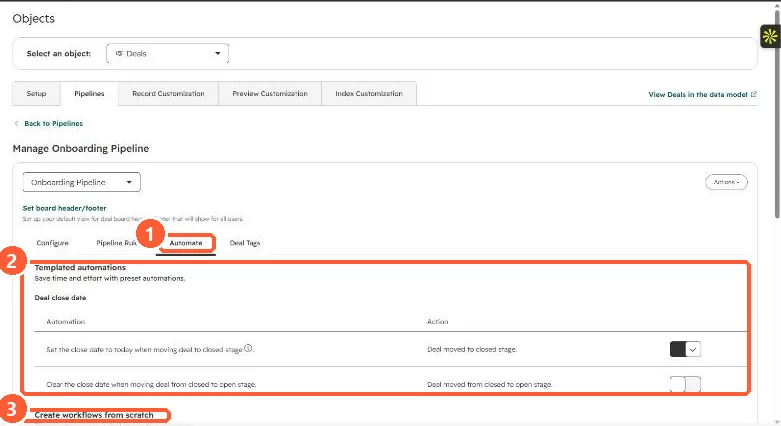

Short answer
Build a deal-based workflow. Trigger it on the property that proves progress (for example a signed date being known), filter to the right pipeline, and add an Edit record action that sets Deal stage. The pipeline's own Automate tab works the other way round: it triggers actions when a deal reaches a stage. Deal probability updates with the stage unless someone has edited probability by hand.
1. The pipeline Automate tab
Open the pipeline in Settings, Objects, Deals, Pipelines and click Automate. My demo portal shows templated close date automations and a section to create workflows from scratch, one per stage, triggered when a deal reaches that stage.


2. The property-driven workflow
- Trigger: the property that marks progress, plus Pipeline is the pipeline you mean. Without the pipeline filter, deals in other pipelines can get a stage from the wrong pipeline.
- Action: Edit record, Deal stage, the target stage. See the Edit record action.
- Guard: add a branch or filter so deals already past that stage are not moved back.
3. Interactions to check
- Pipeline rules: HubSpot says pipeline automations can bypass all rules except approvals. See deal pipeline rules.
- Close date: moving to a closed stage sets the close date to today unless that automation is off.
- Probability: it follows the stage unless a user has edited it by hand.